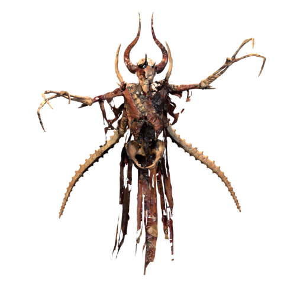

0.3.2 · The deep pays, and bites back
Endgame monsters drop reagents, Embers and runes three to five times as often, Find Item no longer turns every corpse into a rare, the Descent's deeper bands are more crowded, varied and dangerous, the Echo bosses hit as hard as intended, and a crash when opening Options in the Burrows of Pain is fixed.
0.3.2 · Public · Compared with 0.3.1. 12 changes in 3 sections.

The Descent
6 changes- Each Descent band has more monsters than the one above it: 15% more in the Pits of Anguish, rising to 60% more in the Realm of Destruction.
- Every Descent floor now has five monster families chosen to fit its look, and no two floors in a row share more than three. Suicide Minions no longer appear, and Stygian Dolls stay in a few pits.
- Descent monsters in Hell deal 10% more physical damage in the Pits of Anguish, rising to 50% more in the Realm of Destruction.
- Monsters in the Chasm of Terror move and attack 10% faster in Hell, and in the Realm of Destruction 15% faster.
- The five Echo bosses now hit at their intended share of their Uber's damage: 83% for Mephisto, rising to 151% for Baal.
- Pits of Anguish Levels 4 to 10 are much darker, with a cold steel tint in the jail and a dark violet tint in the catacombs.
Items and Crafting
3 changes- Monsters in Sanctuary Stone maps drop reagents and runes 3 times as often in tiers I to III, rising to 5 times in tiers XIII to XV.
- Monsters in the Descent drop reagents, Hellforge Embers and runes 3.25 to 4 times as often, depending on the band. With the extra monsters below, a full floor pays 3 times its old reagents in the Cinders of Hatred, rising to 5 times in the Realm of Destruction.
- Binding Blades, Runebands and other gear drop as before.
Bug Fixes
3 changes- Fixed a bug where using Find Item on a corpse in a Stone map or the Descent almost always found a rare item or a rune. Find Item now gives about 2.5 times the corpse's own drop chances, and never a guarantee.
- Fixed a crash when opening the Options menu in the Burrows of Pain. For now, Levels 4 to 7 are plain caves without their green light, spider chests, cocoons and webs.
- Fixed a bug where Putrid Defilers in the Realm of Destruction and the Echo of the Worldstone were level 81 to 84 instead of their area's level 109.
Earlier releases
0.3.11 NovJewel gambling, Talic, a tidier loot filter and new quivers2 new items, 3 fixes0.3.031 OctSockets, quivers and the classes32 new items, 16 fixes, 28 balance changes0.2.028 OctQuivers, blades and the Last Vigil26 new items, 11 fixes, 3 balance changes0.1.026 OctThe road beyond Baal35 new items, 1 fix, 60 balance changes
Pre-release (private alpha)
0.0.409526 OctThe 0.1.0 release candidatePre-release (private alpha)0.0.407426 OctBlades that spin spellsPre-release (private alpha)0.0.406826 OctCorruption in one stepPre-release (private alpha)0.0.405025 OctFuller Descent, clearer bladesPre-release (private alpha)0.0.403825 OctWhirlwind for everyonePre-release (private alpha)0.0.403025 OctBinding Blades, finishedPre-release (private alpha)0.0.398325 OctBurrows of Pain rebuiltPre-release (private alpha)0.0.397625 OctBinding BladesPre-release (private alpha)0.0.395525 OctMore projectilesPre-release (private alpha)0.0.394425 OctPatch notes and news, rebuiltPre-release (private alpha)0.0.393225 OctStairs you can reachPre-release (private alpha)0.0.389725 OctBosses fall, edges thinnedPre-release (private alpha)0.0.386424 OctPits, Rubble and Barrows tidiedPre-release (private alpha)0.0.384824 OctRubble steadied, the Pits walledPre-release (private alpha)0.0.382124 OctMaps and corruptionPre-release (private alpha)0.0.370724 OctClaw of Prising, Sunken JunglePre-release (private alpha)0.0.369224 OctSentinel gearPre-release (private alpha)0.0.365624 OctSignature lootPre-release (private alpha)0.0.363024 OctMap moods and boss picturesPre-release (private alpha)0.0.358024 OctFading wallsPre-release (private alpha)0.0.356823 OctThe Claw of Prising and the Last VigilPre-release (private alpha)0.0.354823 OctThe Fighting PitsPre-release (private alpha)0.0.354423 OctStone map crash fixPre-release (private alpha)0.0.353923 OctRemnant and oil artPre-release (private alpha)0.0.353223 OctConvergence uniquesPre-release (private alpha)0.0.352123 OctRemnants and the Breath ladderPre-release (private alpha)0.0.348323 OctStone map crash testPre-release (private alpha)0.0.347323 OctRubble crash testPre-release (private alpha)0.0.344123 OctThe Pentagram of ChaosPre-release (private alpha)0.0.338323 OctCrash layouts, Golden Oil classes and the ClawPre-release (private alpha)0.0.326523 OctMap and boss repairsPre-release (private alpha)0.0.322222 OctOils as essencesPre-release (private alpha)0.0.319822 OctMap polishPre-release (private alpha)0.0.302222 OctOil craftingPre-release (private alpha)0.0.301222 OctRunecraft specialsPre-release (private alpha)0.0.299422 OctCrash candidates and a minimap testPre-release (private alpha)0.0.298022 OctCrash test copies with no placed objectsPre-release (private alpha)0.0.297522 OctCrypt crash fix and map repairsPre-release (private alpha)0.0.296222 OctCrash test copiesPre-release (private alpha)0.0.295522 OctVisible shrines, full uniques and a tougher Last VigilPre-release (private alpha)0.0.293122 OctCrash fixes firstPre-release (private alpha)0.0.291822 OctArreat's Defiance and crash fixesPre-release (private alpha)0.0.289922 OctThe Vigil and crash retestsPre-release (private alpha)0.0.263221 OctMap edges and vault repairsPre-release (private alpha)0.0.259721 OctSentinels at the shrinePre-release (private alpha)0.0.246020 OctAt the pinnaclePre-release (private alpha)0.0.243720 OctSnowbound roads and darker skiesPre-release (private alpha)0.0.242920 OctA prize in the VaultPre-release (private alpha)0.0.241120 OctMore ways to find gearPre-release (private alpha)0.0.144816 OctStones and deeper roadsPre-release (private alpha)0.0.86814 OctThe first steps belowPre-release (private alpha)